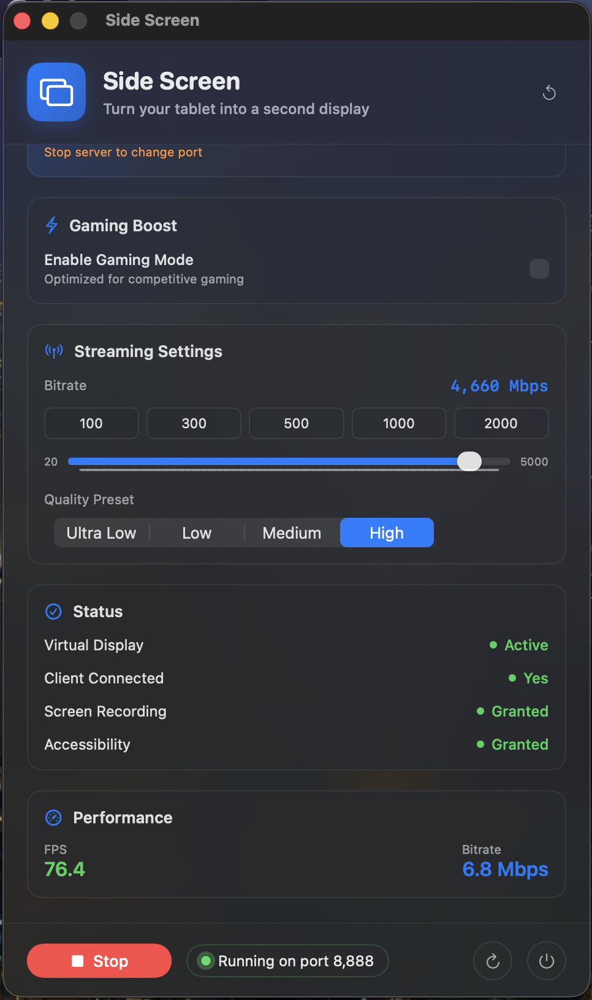
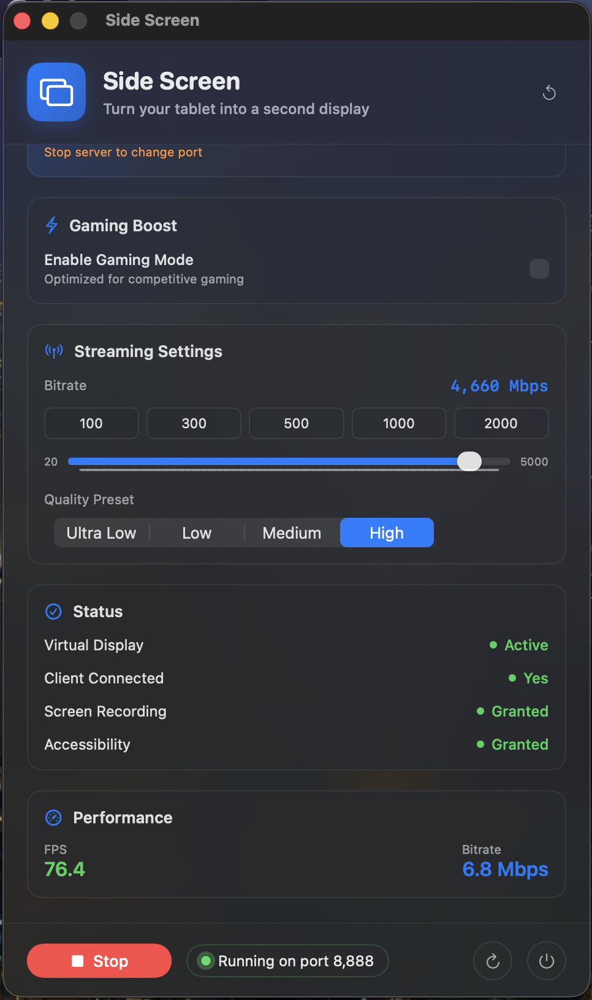

Transform your Android tablet into a second display for your Mac via USB-C. Under 30ms latency, hardware accelerated, gaming ready.
Built by an indie developer.

Built for performance, designed for simplicity
Create a true virtual monitor on your Mac. Drag windows to your tablet just like a real display — not mirroring, but extending your workspace.

Async pipeline with hardware H.265 on both ends. Buttery smooth frames with Choreographer vsync alignment.

Resolution up to 8K, 30–120 FPS, Gaming Boost mode. Fine-tune everything from the Mac app.
 

Plug in USB-C, tap Connect, done. Touch input with prediction makes interaction feel native.
From download to second screen in under 5 minutes
Get Side Screen for your Mac and install the Android app on your tablet.
Plug your tablet into your Mac with a USB-C cable. Port forwarding is handled automatically.
Launch both apps and tap Connect. Your tablet is now a second display!
Free and open source. Always.
macOS Gatekeeper: Open DMG, drag to Applications. If macOS says "damaged":
sudo xattr -cr /Applications/SideScreen.app
⚠️ ADB Required: The Mac app needs adb to communicate with your Android device. If the app doesn't show "Running", install ADB first:
/bin/bash -c "$(curl -fsSL https://raw.githubusercontent.com/Homebrew/install/HEAD/install.sh)"
Then install ADB:
brew install --cask android-platform-tools
Currently, Side Screen uses USB-C for the most stable, low-latency connection. WiFi support is planned for a future release.
This happens because the app isn't notarized by Apple. Open Terminal and run: sudo xattr -cr /Applications/SideScreen.app, then open the app again.
With the optimized async pipeline (hardware H.265 encoding, Choreographer vsync, TCP_NODELAY), you can expect under 30ms end-to-end latency — smooth enough for productivity and casual gaming.
Currently, only Android tablets are supported. iOS support may be considered in the future.
Yes! Side Screen is free and open source under the MIT license. If you find it useful, consider supporting development.
No! The Mac app automatically runs adb reverse to set up port forwarding when streaming starts. Just make sure adb is installed (via brew install android-platform-tools).